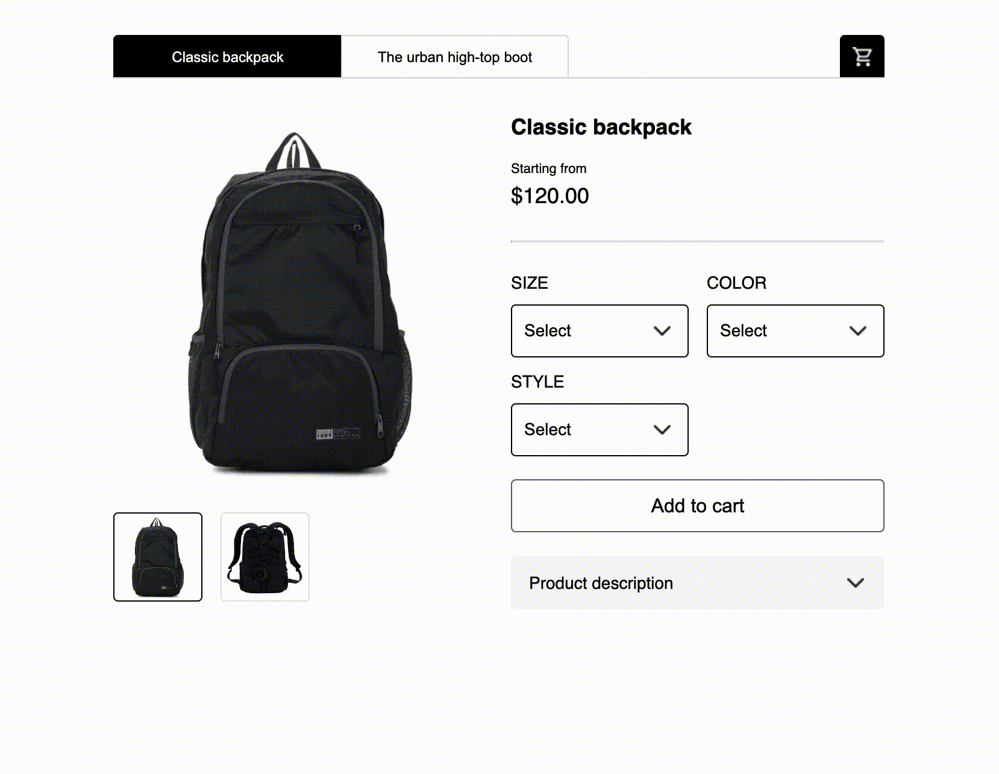
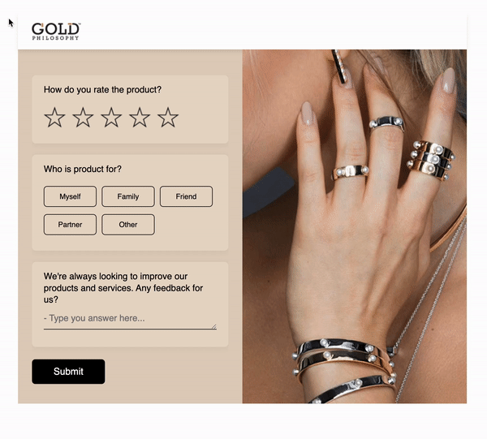
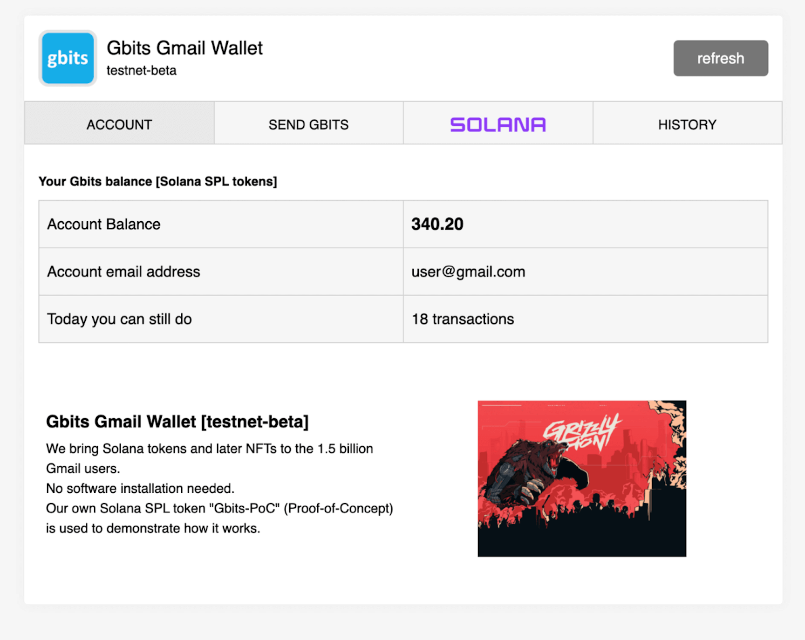
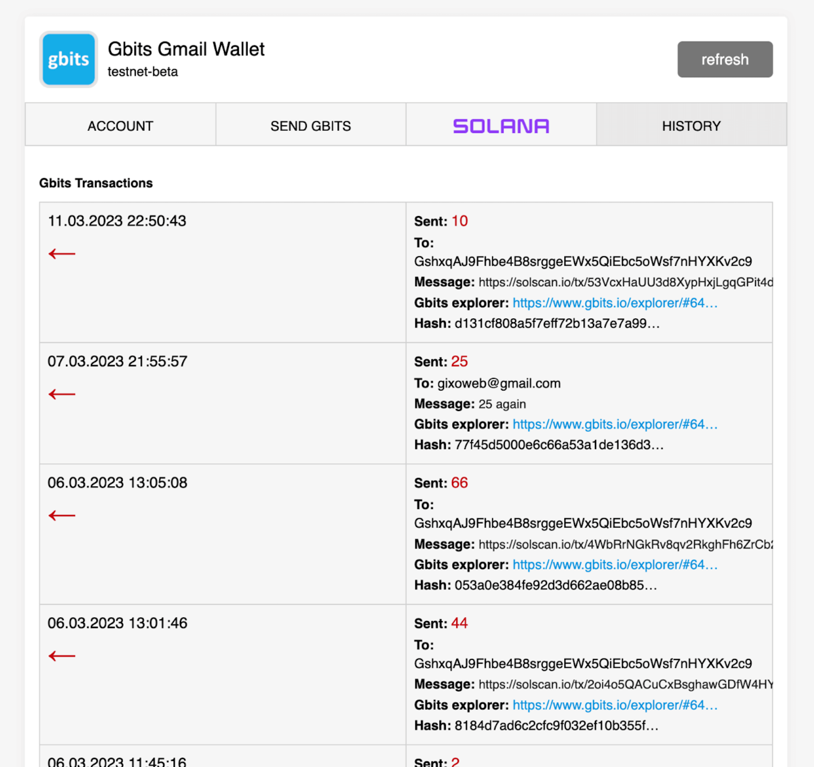

[RU] Ваша емайл-рассылка нуждается в AMP-emails прямо сейчас

Кто я
Привет, я фуллстек разработчик на JavaScript. AMP-эксперт, больше 5 лет работаю с Google-AMP фреймворком(AMP-pages) и более четырех лет с AMP-emails. За это время я успел поучаствовать в нескольких стартапах с AMP-emails и получить исчерпывающий опыт.
Краткое содержание
В данной статье я поделюсь своим опытом насчет AMP-emails и расскажу почему вам стоит их использовать уже сейчас. Для нетерпеливых отвечу сразу: AMP-emails это интерактивные емайлы которые разрабатывает Google и которые создаются преимущественно для Gmail почты, сюда также входят мобильные приложения Gmail для iOS и Android, также браузерная версия для компьютеров. Использовать AMP-emails нужно, потому что это даст более богатый опыт вашим Gmail пользователям и выведет на новый уровень вашу емайл-рассылку. Использовать AMP-emails можно уже сейчас, потому что вы ничего не теряете, при отправке AMP-email всегда отправляется вместе с обычной версией емайла, и все почтовые клиенты которые не поддерживают AMP-emails, автоматически отобразят регулярную емайл версию.
Преимущества AMP-email
1. Никакой табличной верстки и костылей
Все кто когда-нибудь верстал обычные емайлы, знает, что их код выглядит как месиво из table,tr,td тегов, также много приходится писать инлайн стилей. AMP-emails создаются как современные веб-приложения. Все стили можно писать в отдельный style тег.
2. Легкое использование готовых AMP-компонентов
Многие кто занимается емайл-рассылкой знает, что некоторые интерактивные элементы мы можем создавать и в обычных емайлах и это будет работать в некоторых почтовиках.
Например у нас есть задача добавить карусель для картинок товара, мы можем сделать такую разметку в коде обычного емайла:
See the Pen
Самая большая проблема такого подхода, что у этого нет никакого стандарта. По сути это просто очумелые ручки, костыли, что хотим, то и городим.
Как решает данную проблему AMP-emails? У AMP-emails есть компонент amp-carousel, вы просто берете его и используете. Есть документация, примеры. В AMP-email базовая карусель может иметь такой код:
<amp-carousel
width="450"
height="300"
layout="responsive"
type="slides"
role="region"
aria-label="Basic carousel">
<amp-img
src="/static/inline-examples/images/image1.jpg"
width="450"
height="300"
></amp-img>
<amp-img
src="/static/inline-examples/images/image2.jpg"
width="450"
height="300"
></amp-img>
<amp-img
src="/static/inline-examples/images/image3.jpg"
width="450"
height="300"
></amp-img>
</amp-carousel>И при этом не нужно писать никакие CSS стили для карусели, если мы решили использовать базовый дизайн.
Итак в AMP-emails есть готовый набор компонентов такие как: карусель, аккордeон, сайдбар и другие, которые легко добавить в код и которые дадут вашим пользователям более богатый опыт использования. Также стоит учитывать и тот факт, что мы можем легко обрабатывать клики по кнопкам и скрывать/отображать тот или иной элемент после клика пользователя.
3. Обмен данными с сервером
AMP-emails конечно любят не за базовые готовые компоненты, а за динамические данные и возможность обмениваться данными с удаленным сервером(через API). После того, как пользователь открывает AMP-email мы можем отправлять POST и GET запросы к нашему серверу. Разберемся как это работает.
Запросы могут отправляться:
- Автоматически(GET-запрос) при открытии пользователем емайла. При открытии емайла будет происходить запрос к endpoint на нашем API сервера и в ответе от API будет содержаться JSON с данными. Это полезно когда нам нужно показывать пользователю только актуальную информацию, например цены, количество оставшихся номеров в отеле, баланс и другое. Данная возможность позволяет нам например отправлять полностью пустой AMP-email в котором все данные будут динамические(будут загружаться с нашего сервера при открытии емайл пользователем).
- По событию(например клик). Практически по каждому клику пользователя AMP-email может отправлять POST звпрос с какими-либо данными на наш сервер, после чего AMP-email ждет ответ(JSON) и при необходимости выводит данные из него в емайле, также есть обработка ошибок. По клику пользователя также мы можем рефрешиь данные(повторяем GET запрос) которые мы загрузили, когда пользователь открыл емайл(1).
Некоторые примеры AMP-emails из моих работ, с запросами к серверу, динамическими данными
E-commerce Shopify AMP-email
В данном примере AMP-email все данные динамические. Это значит что все тексты и картинки подгружаются динамически с API Shopify магазина(данные AMP-email синхронизированы с данными магазина). Эти данные подгружаются каждый раз когда пользователь открывает AMP-email. Также присутствует событие проверки товаров в корзине, оно срабатывает по клику на иконку корзины, AMP-email отправляет POST-запрос с данными корзины и сервер проверяет, есть ли выбранные товары в наличии, после чего присылает ответ AMP-емайлу, который тот обрабатывает.
Данный AMP-email поддерживает от одного до пяти товаров и может быть подключен к любому Shopify магазину.
Survey AMP-email
С помощью AMP-emails мы можем делать всевозможные опросы, викторины, анкеты, оценки, рейтинги, включая те, что будет переключаться "экран" после выбора пользователя(например со шкалой прогресса).
Криптокошелек AMP-email
Данный AMP-email содержит несколько табов(страниц):
- Данные пользователя, баланс, лимиты
- Окно перевода токенов внутри сети, по адресу емайл получателя
- Вывод токенов на свой криптокошелек(Solana)
- История всех переводов
Данный AMP-email подключен к самописному API на Nodejs и работает по тому же принципу: отправляет запросы к API и получает ответы с данными. Особенность данного емайла в том, что пользователь может выводить токены на свой криптокошелек прямо из емайла. На сервере, помимо прочего, используется Web3js для подключения к сети Solana.
4. Отправка AMP-emails
AMP-email версия отправляется всегда вместе с регулярной HTML версией. Отправку AMP-emails можно настроить как самому через SMTP, так и воспользоваться готовымиESPs-решениями Ниже показан пример кода, как можно отправлять AMP-emails с помощью ESP Sendgrid, как вы видите, вместе отправляются сразу три версии: AMP, HTML, Plain text.
const message = {
to: 'recipient-email-address@gmail.com',
from: 'your-sender-address@gmail.com',
subject: 'Demo AMP-email via Sendgrid',
trackingSettings: {
clickTracking: {
enable: true,
},
openTracking: {
enable: false,
},
subscriptionTracking: {
enable: false,
},
},
content: [
{
type: 'text/plain',
value: 'Some plain text with Email description',
},
{
type: 'text/x-amp-html',
value: `<!doctype html>
<html ⚡4email data-css-strict>
<head>
<meta charset="utf-8">
<script async src="https://cdn.ampproject.org/v0.js"></script>
<style amp4email-boilerplate>body{visibility:hidden}</style>
</head>
<body>
Hello, AMP4EMAIL world. This is AMP-email version of email!
</body>
</html>`,
},
{
type: 'text/html',
value: `
<!DOCTYPE html>
<html lang="en" xmlns="http://www.w3.org/1999/xhtml" xmlns:o="urn:schemas-microsoft-com:office:office">
<head>
<meta charset="UTF-8">
<meta name="viewport" content="width=device-width,initial-scale=1">
<meta name="x-apple-disable-message-reformatting">
<title></title>
<style>
table, td, div, h1, p {font-family: Arial, sans-serif;}
table, td {border:2px solid #000000 !important;}
</style>
</head>
<body style="margin:0;padding:0;">
<table role="presentation" style="width:100%;border-collapse:collapse;border:0;border-spacing:0;background:#ffffff;">
<tr>
<td align="center" style="padding:0;">
Hello HTML world! This is HTML version of email!
</td>
</tr>
</table>
</body>
</html>`,
},
],
};
5. Динамическая загрузка картинок
Ответ от API сервера может содержать в себе URL картинки, которые мы можем динамически подгружать в AMP-email, например по событию клика. Это удобно когда например хочется динамически загрузить QR-код.
Другие виды AMP-emails
Бывают AMP-emails с бронированием билетов на самолет, номеров в отели, продажа билетов на спортивный матч, различного рода финансовые AMP-emails, также вариант оплаты товаров прямо в емайле с банковской карты. И многое-многое другое...
Поддержка почтовыми клиентами
Официально поддержка заявлена в таких почтовых клиентах как: Gmail, Yahoo, Mail.ru, FairEmail. Но чаще всего AMP-email делаются исключительно под Gmail пользователей. AMP-emails работают как в браузерной версии Gmail для компьютеров, так и в мобильных Gmail приложениях для IOS и Android.
При отправке AMP-email всегда отправляется две версии вместе: AMP и обычная. Те почтовые клиенты, которые не поддерживают AMP-emails автоматически отображают обычную HTML-версию.
Итого
AMP-emails дадут вашим пользователям более богатый опыт взаимодействия с емайлами. Есть исследования, которые говорят, что в AMP-email выше конверсия, так как пользователю незачем переходить на внешние ресурсы и он все может сделать внутри своего AMP-email. При этом вы ничего не теряете, ваши пользователи других почтовых клиентов, которые не поддерживают AMP-emails будут видеть ваши регулярные HTML-емайлы как и раньше.